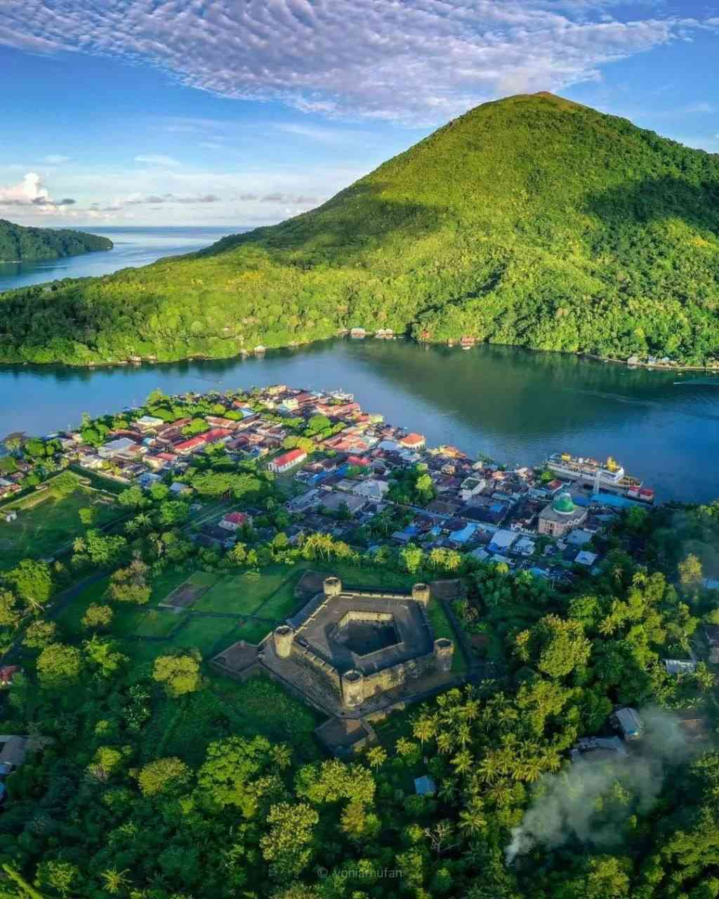
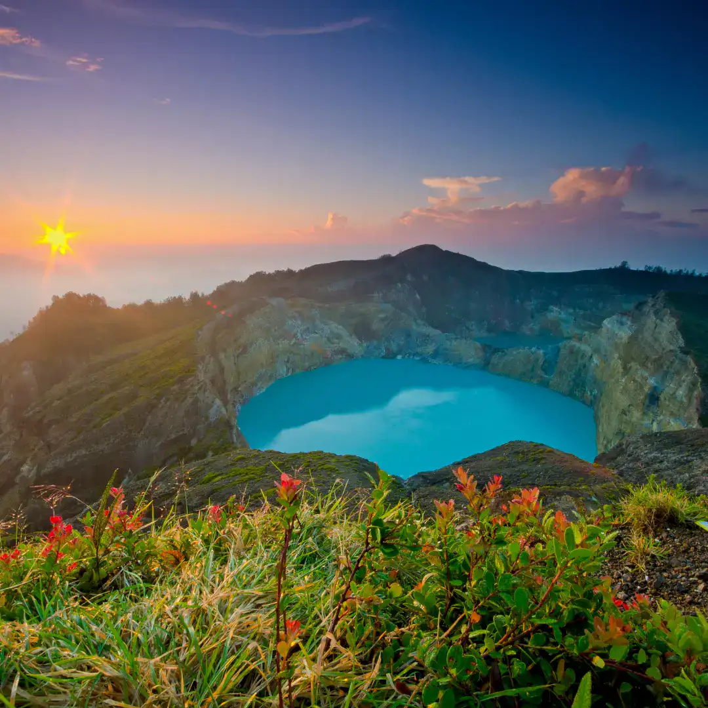

 Banda Neira adalah salah satu pulau vulkanik yang ada di gugusan kepulauan Banda, Maluku. Pulau ini menarik perhatian banyak orang sebab menawarkan eksotisme wisata alam sekaligus jejak-jejak sejarah masa lampau.Banda Neira merupakan pusat kecamatan Banda, Kabupaten Maluku Tengah, Provinsi Maluku. Di Dalamnya terdapat 12 desa dengan jumlah penduduk sekitar 14.000 orang. Lihat Detail
 Danau Tiga Warna di Pulau Flores tidak hanya menonjolkan keunikan dari warna airnya saja. Melainkan terdapat beberapa mitos menarik yang jarang orang ketahui.Menurut buku Exotic NTT - Seri Backpacking & Travelling oleh Gagas Ulung (2013, hal.184), air pada Danau Tiga Warna di Pulau Flores dapat berubah karena adanya makhluk mikroorganisme yang hidup di dalam air dan perubahan suhu air. Lihat Detail
Cappadocia adalah wilayah kuno yang terletak di Turki tengah selatan atau tenggara Ankara. Cappadocia berada di dataran tinggi yang terjal di utara Pegunungan Taurus. Dikutip dari situs wisata Go Turkiye, geologis Cappodocia yang unik membuat wilayah ini disebut cerobong peri.Cappadocia terkenal dengan hamparan batuan vulkanik lunak yang terbentuk oleh erosi dari gunung berapi selama jutaan tahun. Lihat Detail Kembali Keatas